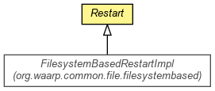

org.waarp.common.file
Class Restart
java.lang.Object
 org.waarp.common.file.Restart
org.waarp.common.file.Restart
- Direct Known Subclasses:
- FilesystemBasedRestartImpl
public abstract class Restart
- extends Object

Restart object that implements the REST command.
Note that if necessary, according to the implementation of DirInterface and
FileInterface, one could want to implement a way to store or retrieve Marker from/to the
client specification.
- Author:
- Frederic Bregier
| Methods inherited from class java.lang.Object |
clone, equals, finalize, getClass, hashCode, notify, notifyAll, toString, wait, wait, wait |
Restart
protected Restart(SessionInterface session)
- Default constructor
- Parameters:
session -
isSet
protected boolean isSet()
- Returns:
- the isSet
setSet
public void setSet(boolean isSet)
- Parameters:
isSet - the isSet to set
getSession
protected SessionInterface getSession()
- Returns:
- the session
restartMarker
public abstract boolean restartMarker(String marker)
throws CommandAbstractException
- Restart from a Marker for the next FileInterface
- Parameters:
marker -
- Returns:
- True if the Marker is OK
- Throws:
CommandAbstractException
getPosition
public abstract long getPosition()
throws NoRestartException
- Returns:
- the position from a previous REST command
- Throws:
NoRestartException - if no REST command was issued before
getMaxSize
public abstract int getMaxSize(int nextBlock)
- Parameters:
nextBlock -
- Returns:
- the max between the available size and the nextblock size
Copyright © 2009-2012 Waarp. All Rights Reserved.